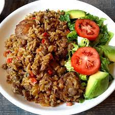

Pelau

Pelau Decorated with Fresh Salad
Pelau Delight is a quick and easy meal to prepare when you are in a hurry to wip up
something fast and delicious. It is one of my favourite foods. This recipe serves
10 persons with a set up time of about 5 minutes. The overall cooking time is
is approximately half and hour.
Ingredients
- 1 cup of brown sugar
- 10 small pieces of chicken
- 2 cups of canned pigeon peas
- 4 cups of rice
- 3 tablespoons of oil
- 3 cloves of garlic
- 1 onion
- 3 leaves of thyme
- salt
- 1 pack of coconut milk
Directions
- Place sugar in pot and heat until liquid dark-brown
- Add pigeon peas to pot and stir
- Add chicken to put and stir
- Add water until ingredients are submerged
- Boil until meat is soft and tender
- Add rice and seasonings
- Add salt and butter to taste and allow water to evaporate on a low flame
- Turn off flame when rice is properly cooked
- Serve with fresh salad